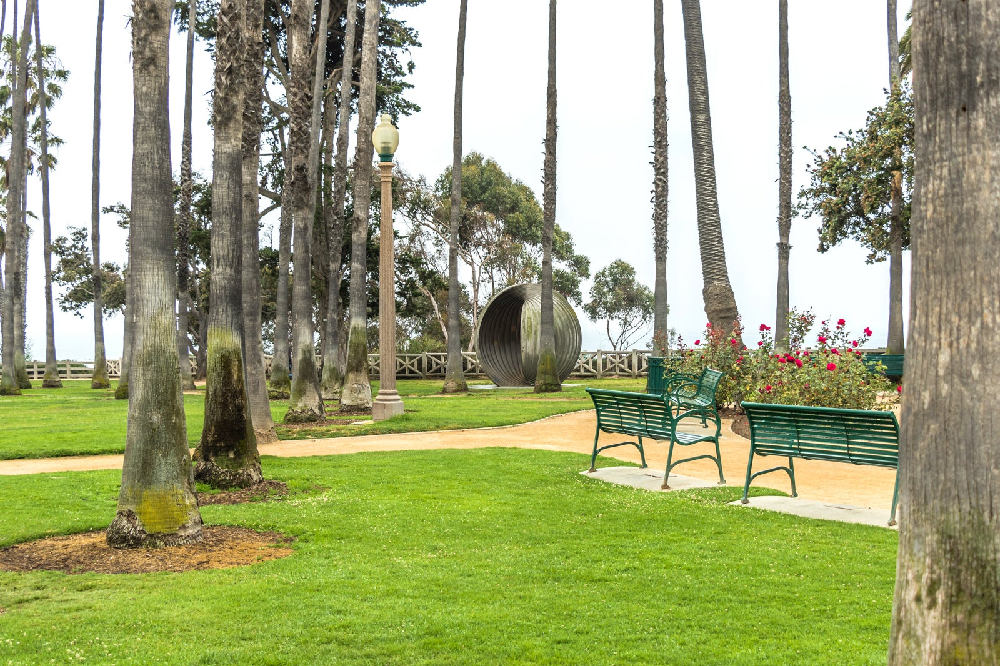
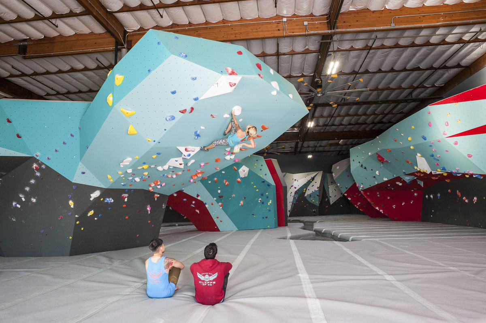
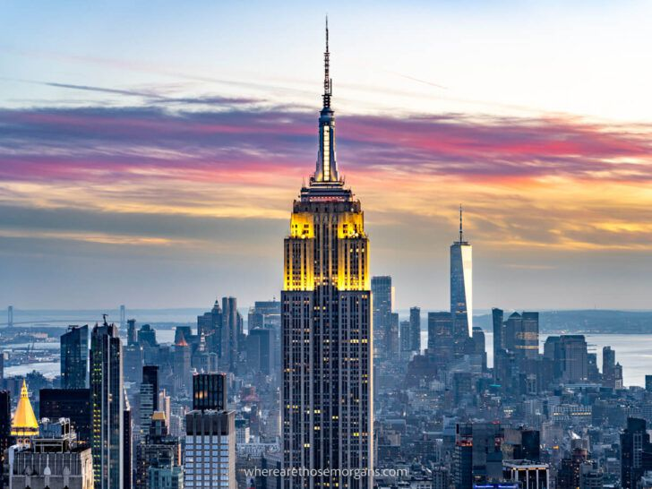
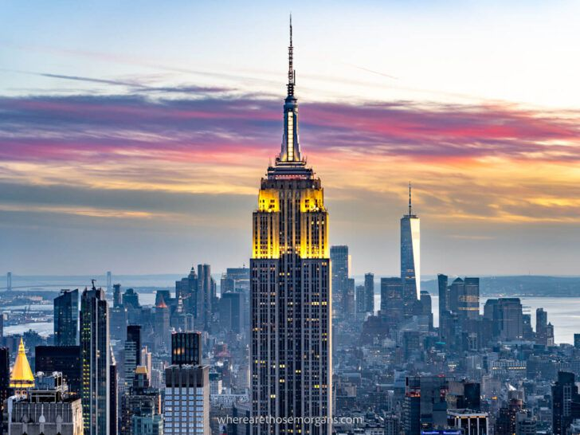
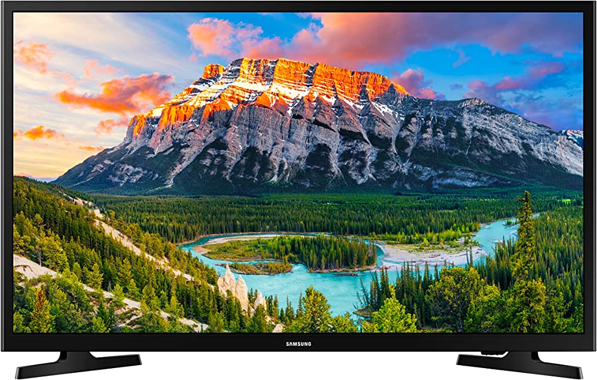
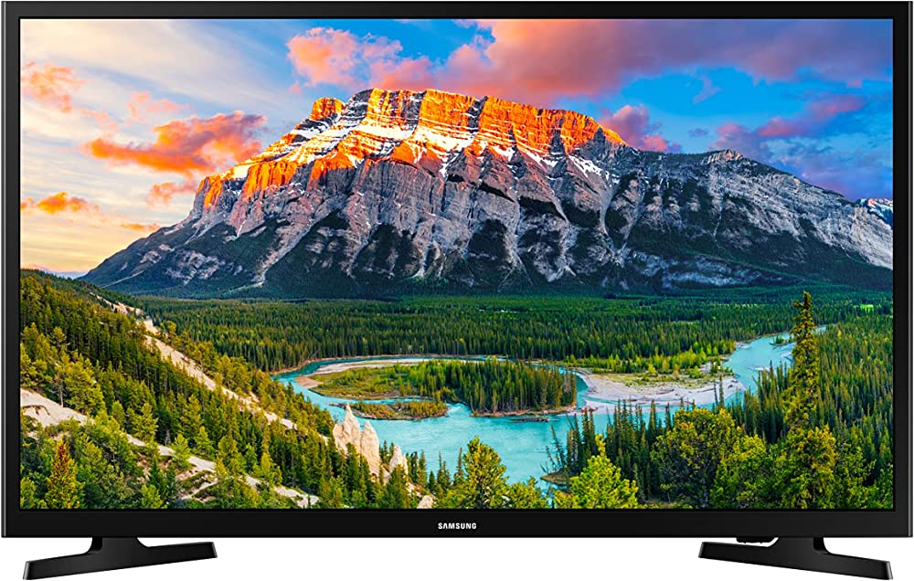

Natural Spaces


I have always found solace in the tranquil serenity of nature. The rustling of leaves in a park, the majestic sight of a towering rock wall, these are moments that truly soothe my soul.
Urban Spaces
 

Urban landscapes have a distinct charm. The Eiffel Tower, the Empire State Building, each a testament to human ingenuity and artistry, offer an entirely different sense of calm and inspiration.
Home Spaces
 


There's no place like home. Whether it's getting lost in the pages of a good book, watching my favorite show on TV, or lounging by the pool, home is where I feel most at peace.